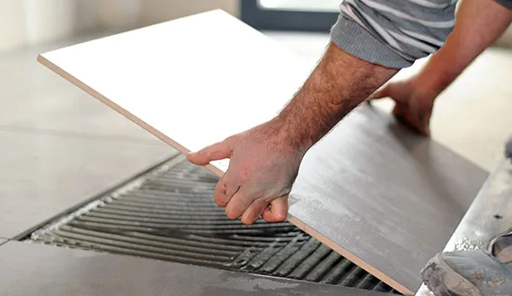

Carrelage haut de gamme
Grand format, mosaïque, pierre naturelle, grès cérame fin. Préparation du support, colle adaptée, joints soignés. Une pose minutieuse, durable.
Découvrir →Soyons honnêtes : notre atelier est à Manosque. Mais pour un beau chantier, nous nous déplaçons volontiers jusqu'à Aix et ses environs. Carrelage haut de gamme, travertin et plages de piscine, posés au millimètre.
Pas de fausse adresse, pas de promesse en l'air. Voici comment on travaille quand le chantier est sur le secteur d'Aix.

ABC Chape liquide & Carrelage est installé aux Quintrands, à Manosque. Aix-en-Provence est à environ une heure de route. Pour les chantiers qui le justifient, carrelage haut de gamme, travertin, plage de piscine, nous faisons le déplacement avec plaisir et le même niveau d'exigence qu'à domicile.
On cible les projets exigeants, en neuf comme en rénovation, pour les particuliers et les professionnels.
Grand format, mosaïque, pierre naturelle, grès cérame fin. Préparation du support, colle adaptée, joints soignés. Une pose minutieuse, durable.
Découvrir →Contours de piscine, margelles, terrasses et allées. Travertin et grès cérame antidérapant, résistants au gel et pensés pour l'extérieur.
Découvrir →
Chape fluide anhydrite ou ciment, en synergie parfaite avec le carrelage. Un support plan posé par celui qui posera le revêtement.
Découvrir →
Douche à l'italienne, faïence grand format, étanchéité, finitions sur mesure. La pièce d'eau repensée du sol au plafond.
Découvrir →
Sur un chantier haut de gamme, ce sont les détails qui parlent : une coupe d'onglet propre, un profilé inox brossé, un calepinage qui tombe juste. C'est là que se voit le savoir-faire.
Travertin, extérieurs et finitions haut de gamme. Cliquez pour agrandir.


Carrelage collé, sur plots, travertin, pavés. Contraintes et prix.

60x60, 80x80, 120x120. Double encollage, chape plane, joints minces.

Plots réglables, dalles 60x60, pose à sec. Avantages et prix au m².
Devis gratuit sous 48h, sans engagement. On vous dit franchement si le projet justifie le trajet depuis Manosque.